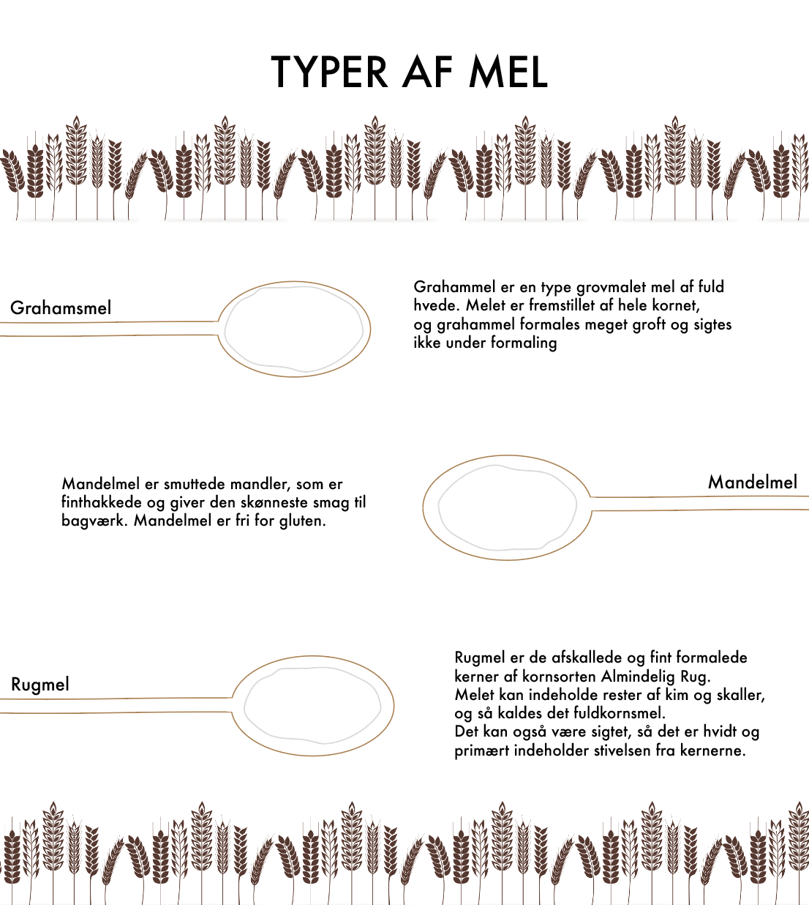
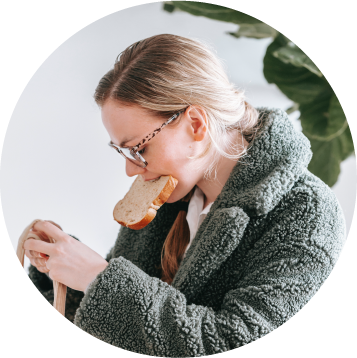
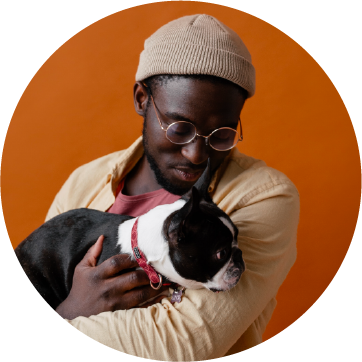
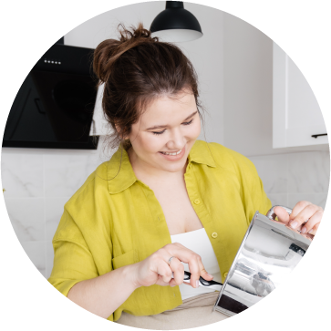
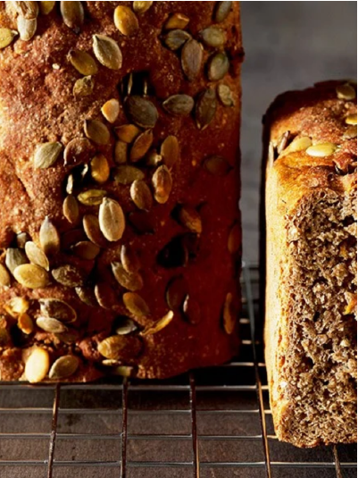
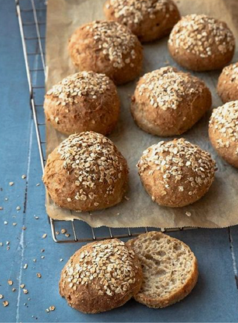
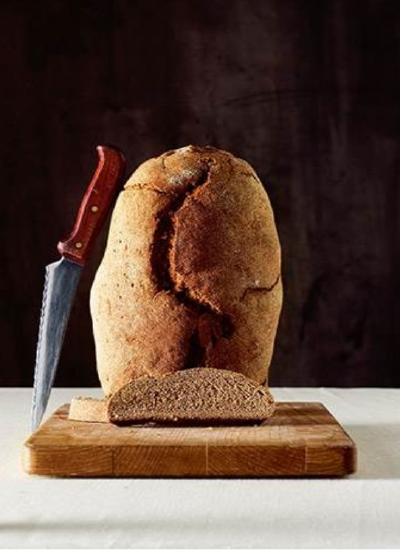

<!DOCTYPE html>
<html lang="en">
<head>
  <title>Tips og tricks</title>
  <meta charset="UTF-8">
  <meta name="viewport" content="width=device-width, initial-scale=1.0">
  <meta http-equiv="X-UA-Compatible" content="ie=edge">
  <meta name="author" content="Michella Carstens">
  <meta name="keywords" content="Amo, Amo hvedemel, Bagning, Hvedemel, Mel, Brød, Kager, Bagværk, Gul melpose, Louise Wulf, Bager">
	<meta name="description" content="">
  <link rel="stylesheet" href="css/style.css">
  <!-- favicon = ikon i faneblad / browser -->
	<link rel="icon" type="image/x-icon" href="images/favicon.png" />
</head>

<body>

<!-- navigationsbar -->
<nav id="navigation">

<!-- Burgermenu -->
    <div class="burgermenu">
    <div id="showMenu">
      <a href="mob-menu.html">☰</a>
    </div>
    </div>

    <div class="dropdown">
    <a href="index.html" class="dropbtn">Med Louise Wulf</a>
    <div class="dropdown-content">
    </div>
  </div>
  <div class="dropdown">
    <a href="#" class="dropbtn">Opskrifter</a>
    <div class="dropdown-content">
      <a href="tidenstrends.html">Tidens trends</a>
      <a href="#">Brød</a>
      <a href="#">Kager</a>
      <a href="#">Højtider</a>
      <a href="#">Gluten fri</a>
    </div>
  </div>
  <div class="dropdown">
    <a href="#" class="dropbtn">Produkter</a>
    <div class="dropdown-content">
      <a href="#">Mel</a>
      <a href="#">Blandinger</a>
      <a href="#">Gluten fri</a>
    </div>
  </div>
    <a href="index.html"></a>
  <div class="dropdown">
    <a href="tipsogtricks.html" class="dropbtn">Tips og tricks</a>
    <div class="dropdown-content">
      <a href="tipsogtricks.html">Mel guide</a>
      <a href="#">Så meget vejer ingredienserne</a>
    </div>
  </div>
  <div class="dropdown">
    <a href="bæredygtighed.html" class="dropbtn">Bæredygtighed</a>
    <div class="dropdown-content">
      <a href="bæredygtighed.html">Arbejdet med bæredygtighed</a>
  </div>
</div>
<div class="dropdown">
  <a href="#" class="dropbtn">Om Amo</a>
  </div>
  </nav>


<!-- overskrift h1 -->
<header>
<div class="header">
<p> Tips og tricks </p>
<h1> Sådan bruger vi Amo hvedemel i hverdagen </h1>
</div>
</header>

<div id="infographic">

</div>


<main>
  <div class="tipsogtricks">
    <div class="line">
  <h3> Line, 27 </h3>
  
  <p> Jeg bager en masse i min fritid. I løbet af de sidste par år
har jeg fået en stor interesse for bagværk. I weekenderne
kaster jeg mig gerne ud i alverdens brød-opskrifter, hvilket
min kæreste nyder godt af. Det skaber en fantastisk hyggelig
stemning i vores lille hjem.Mit seneste plet-skud var med denne opskrift:Trekanter med røg og chiafrø. </p>
</div>

<div class="mads-emil">
  <h3> Mads-emil, 26 </h3>
  
  <p> Personligt elsker jeg at være i et køkken. Jeg elsker at skabe
noget, og har en svaghed for godt bagværk.
Henover corona-epidemiens lockdowns fik jeg øjene op
for surdej. Jeg synes det er spændende, fascinerende, og
er vild med ideen om, at den kan vare evigt.
Find opskriften på surdej her. </p>
</div>

<div class="trine">
  <h3> Trine, 35 </h3>
  
  <p> Jeg er den største sucker for Den store bagedyst. Alt min
inspiration til at starte med bagning, kom fra programmet,
og interessen er kun vokset siden.
Jeg bager kager i alle former og afskygninger, og til alle
slags begivenheder. For mig er det en måde at slappe af på,
og noget som jeg virkelig hygger mig med. Ofte hjælper
mine børn til med små opgaver. For os er det noget der samler
familien. </p>
</div>
</div>


<div class="bagmedrug">
    <h2>Flere tips og tricks</h2>
    <p> Bag med rug! </p>
    <p> Du kender rugmel fra rugbrød. Men rug er også lækkert at bruge i andet bagværk, hvis du vil have ekstra karakter
og smag til krummerne.
<p>Rugmelets protein danner ikke gluten. Det betyder, at rugbrød ikke kan hæve på samme måde som hvededej. </p>
<p>Rugmel har en rig smag og aroma, og det kan derfor anvendes i næsten alt slags grovbrød.
Rugmel er velegnet til at blande med andre meltyper </p>
  </div>


<div class="row">
  <h1> Opskrifter med rugmel </h1>
  <div class="column">
    
    <h3> gullerodsrugbrød </h3>
  </div>
  <div class="column">
  
    <h3> Rugbrødsboller </h3>
  </div>
  <div class="column">
  
    <h3> Sønderjysk rugbrød </h3>
  </div>
</div>

</main>

<!----------------- Footer ------------------->

<!---- Footer SOME ikoner ---->
<footer>
  <div class="ikoner">
    
  </div>

<!---- Nyhedsbrev - sign up here buttom ---->
  <div class="footer-email-container">
  <div class="footer-email-form">
  Få nyt om velsmagende opskrifter og andre spændende ting
  <input type="submit" value="Tilmeld dig her" id="footer-email-btn">
  </div>
  </div>

  <!---- Footer kontaktinfo og Om os - flexbox ---->
  <div class="flex-container-footer">
      <div class="flex-kontakt">
        <h3> Kontakt </h3>
        <p>Ved spørgsmål eller kommentare bedes du kontakte os på følgende:</p>
        <p> Email: Forbrugerkontakt.amo@lantmannen.dk
        <p> Telefon: 80253406
      </div>
      <div class="flex-omos">
        <h3> Om Amo</h3>
        <p>Vi er ejet af svenske landmænd, og sammen tager vi ansvar fra jord til bord.</p>
        <p> 90% af alle danskere kender Amo-varemærket, der er kendt for sine
          Amo-den-gule-posebageblanding til hjemmebag.
          Amo varemærket har altid været forbundet med den omsorgsfuldhed, man oplever,
          når den moderne hjemmebager, bager brød til hele familien.
        <p><a href="omos.html">Læs mere her</a></p>
      </div>
    </div>


<div id="amo-detaljer">
  <p> Lantmännen Cerealia A/S  |  Møllegade 12, DK-7100 Vejle  |  Tlf. 79 41 54 15  |  Databeskyttelsespolitik </p>
</div>


<!---- Copyright---->
    <div class="copyright">
          <p id=copyright> &copy; Copyright 2021, Alle rettigheder forbeholdes.</p>
            </div>
</footer>


</body>
</html>
